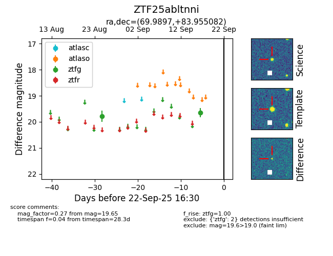

FINK: ZTF25abltnni
Lasair: ZTF25abltnni
ALeRCE: ZTF25abltnni
ZTF25abltnni (ztf,fink)
equatorial (ra, dec) = (69.9897,+83.95508)
galactic (l, b) = (128.4768,+23.73969)

last ztfg=19.65
2 ztfg detections